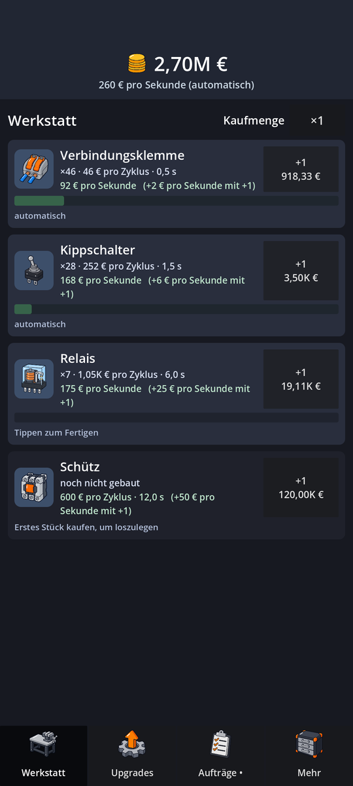
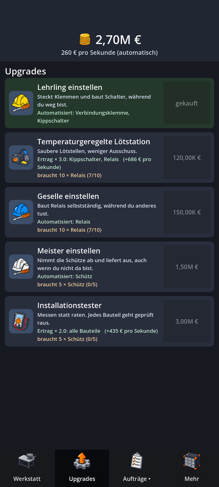
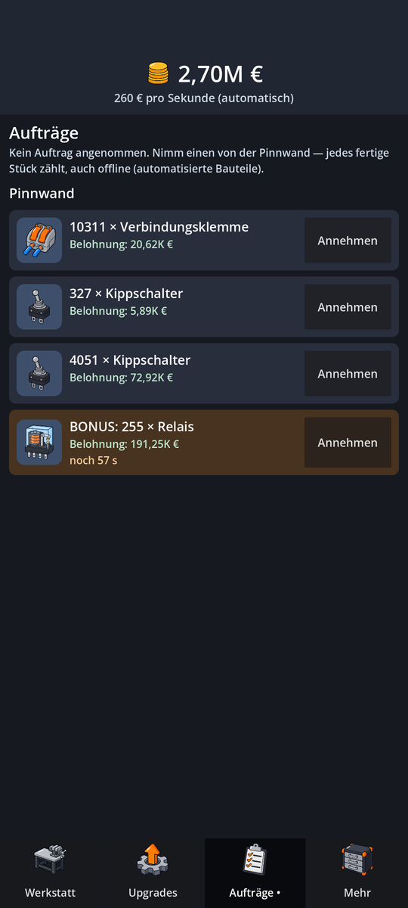

Purcade Games
Das Ein-Personen-Studio von Sezgin Purc. Hier entstehen kleine Spiele für das Handy – zuerst eines, das Elektrotechnik zum Spiel macht.
Spiele
Volt Works
Ein Idle-Tycoon im Hochformat. Du beginnst mit Verbindungsklemmen und Kippschaltern in der Garage, stellst einen Lehrling ein, erfüllst Aufträge von der Pinnwand und arbeitest dich durch die Tech-Ären – von der Relaistechnik über den Steuerungsbau zur Automatisierung.
Deine Werkstatt arbeitet weiter, während du weg bist. Das Spiel ist kostenlos und kommt ohne Konto aus. Werbung gibt es nur, wenn du sie selbst für eine Belohnung startest.



In English: Purcade Games is the one-person studio of Sezgin Purc from Germany. Currently in development: Volt Works, a free idle tycoon game for Android about electrical engineering.
Kontakt
E-Mail: purcade.games@gmail.com
Datenschutz
Die Datenschutzerklärung für Volt Works steht hier: Datenschutzerklärung Volt Works.
Diese Website setzt keine Cookies und lädt keine Inhalte von Dritten. Sie liegt bei GitHub Pages (GitHub, Inc., USA); beim Aufruf verarbeitet GitHub technisch notwendige Zugriffsdaten wie deine IP-Adresse.
Impressum
Angaben gemäß § 5 DDG
Sezgin Purc
Landsbergerstraße 102
86343 Königsbrunn
Deutschland
E-Mail: purcade.games@gmail.com